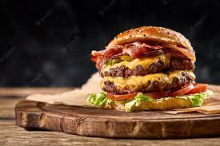

Burger

Burger by Reyansh
A very delicious Burger
Ingredients
- 2 pounds extra-lean ground beef
- 1 package dry onion soup mix
- 1 egg, lightly beaten
- 2 teaspoons Worcestershire sauce
- 1/4 teaspoon ground black pepper
- 3/4 cup rolled oats
Steps
- Preheat an outdoor grill
for medium high heat and lightly oil grate.
- In a large bowl,
combine the beef, onion soup, egg, hot sauce and oats,
shape into 6 patties.
-
Grill patties over medium high heat for 10 to 20 minutes,
or to desired doneness.